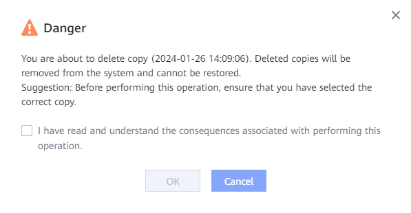
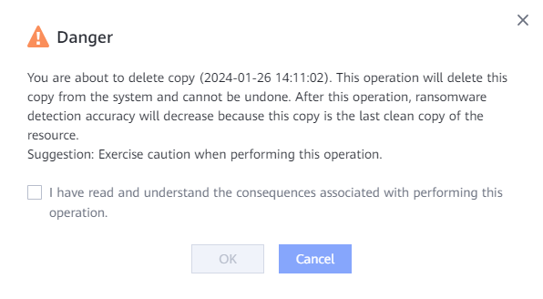

This section describes how to delete ransomware detection copies that are unavailable or no longer needed.

When you delete the last uninfected copy of the current resource, the following dialog box is displayed. Confirm the information, select I have read and understand the consequences associated with performing this operation., and click OK.

Resource types include VMware VM, NAS File Systems, NAS Shares, Filesets, CNware VM, Huawei Cloud Stack, FusionCompute VM, Hyper-V VM, and FusionOne Compute VM.
When you delete the last uninfected copy of the current resource, the following dialog box is displayed. Confirm the information, select I have read and understand the consequences associated with performing this operation., and click OK.